처음 들어오는 사람
팀의 튜토리얼 흐름에 본 게임의 폰트·종이 질감을 맞췄습니다. 종료 안내가 미니맵을 가리는 배치, 연습 인원과 원 위 점 개수가 다른 표시, 추리 색 지정 후 진행이 막히는 연결을 수정했습니다.
메인 프로젝트, 〈Who's Tail〉, 5인 팀
도시를 무대로, 정해진 타깃의 꼬리를 뒤에서 잡아 빼앗는 3D 멀티플레이 추격 게임입니다. 누가 나를 쫓는지는 꼬리를 잡히기 직전까지 모릅니다.
11.23 M3 평가 제출까지의 작업2026.11.24 내용 갱신
휴대폰의 정보 연결, 알림 분류, 세 QTE의 피드백, 관전자 UI 폴리싱을 정리했습니다. 11.24 직접 녹화한 영상 8편과 원본 시간대별 분류표를 추가했습니다.
M3에서 다듬은 부분부터 보기최대 12명이 원형 사슬로 서로를 쫓습니다. 닿기만 해서는 끝나지 않고, 뒤에서 꼬리를 잡은 뒤 힘겨루기에서 이겨야 빼앗습니다.
M3에서는 단서로 판단하고, 휴대폰에 추리를 남기고, 세 가지 힘겨루기로 겨루는 흐름까지 화면을 다듬었습니다. 11월 24일 직접 녹화한 제출 빌드의 영상으로, 실제 입력이 화면과 결과에 이어지는 모습을 담았습니다.
설계한 화면이 실제 입력과 만나는 순간을 모았습니다. 영상을 펼치면 원래 게임 화면과 짧은 설명을 함께 볼 수 있습니다.
팀원이 제작한 로비 튜토리얼용 영상, 봇 상대. 현재 소개하는 세 QTE와 입력·HUD가 다른 초기 빌드입니다. 11.23 제출 빌드의 촬영 영상은 아닙니다.
사슬 구조, 후방 잡기, 게이지 대결은 팀 컨셉 기획서 4~5절을 바탕으로 설명했습니다. 후속 기능은 보존된 11.20 main 소스(3ef9b2a67)와 작업 인계 기록을 참고했습니다. 꼬리 셔플의 10초 예고는 실제 이벤트 진행 시간에 연결한 UI입니다. 오락실 이벤트와 네트워크 로직 등 팀원의 후속 개발은 제 개인 제작 범위에 포함하지 않았습니다.
표지와 새 영상 8편은 11.23 지정한 M3 제출 빌드를 11.24 직접 녹화한 자료입니다. 튜토리얼과 봇 참여 플레이를 구분했습니다. 이전 제작 과정 이미지는 당시 날짜의 작업 증거로 보존했습니다. 최종 ZIP과 소스 커밋의 정확한 대응은 별도로 확인해야 합니다.
팀 최종 기획서의 담당 칸 그대로입니다. 코드는 AI와 함께 만들었고, 기획 판단과 플레이 검수는 제가 했습니다.
의견을 판단으로 바꾼 사례부터, 화면과 아이템을 고친 과정으로 이어집니다.
추리한 색을 다른 앱에서 다시 지정하거나, 메시지를 받았는데 어디서 읽는지 찾게 되는 순간을 줄이려 했습니다. 같은 사람의 정보와 읽음 상태가 화면 사이에서 이어지도록 정리했습니다.
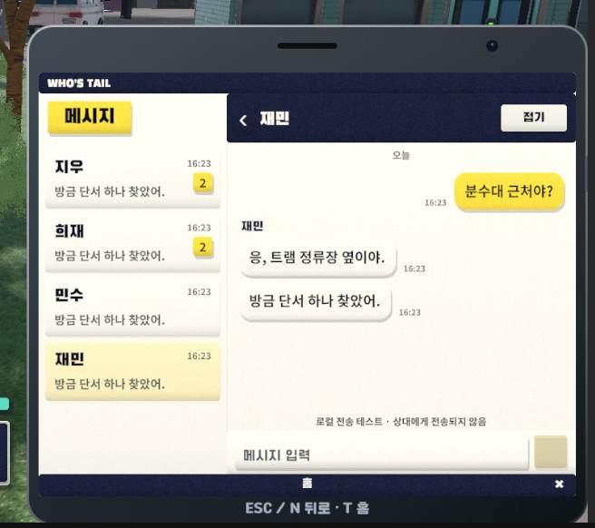
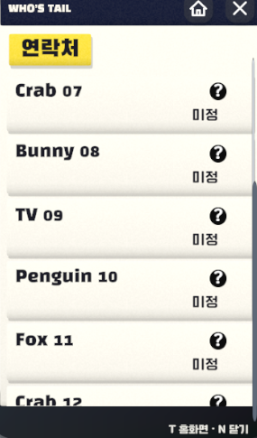
이름표를 끌어 놓고 색을 고르는 동안 미니맵이 계속 바뀌면 산만했습니다. 꼬리 화면에서 나올 때 추리 배치와 색을 적용하고, 연락처와 상대 꼬리 표시에도 같은 정보를 연결했습니다.
처음에는 정보 유출을 막으려고 전부 초기화하는 안을 검토했습니다. 탈락자 이름을 공개하는 흐름에 맞춰 해당 이름표만 빼고 나머지 배치와 색을 유지하도록 바꿨습니다. 추리는 보존하고, 남은 인원에 맞춰 원을 재배치합니다.
새 메시지는 오른쪽 위 배너로 즉시 알립니다. 클릭하면 보낸 사람의 대화방을 열고, 그때 해당 대화의 빨간 배지를 지웁니다. 배너를 보거나 목록만 열었을 때는 읽음으로 처리하지 않습니다.
연락처·채팅·통화의 헤더와 종이 표면, 홈·닫기 버튼을 맞췄습니다. 통화에서는 중복 상태 안내를 줄이고 상대 얼굴과 마이크·끊기를 중심으로 되돌렸습니다. 작은 폰과 펼친 폰의 높이도 맞춰 전환 흐름을 정리했습니다.
기획 판단·화면 피드백·공통 스타일은 제가 정했고 구현 코드는 AI와 작업했습니다. 추리의 편집/적용 분리는 PhoneDeductionModel, 읽음과 배지는 MobileChatSession·PhoneUnreadBadge, 수신 배너는 ChatPreviewBanner에 연결했습니다. 위 이미지는 당시 작업 증거이며 최종 제출 ZIP을 새로 촬영한 화면은 아닙니다.
처음에는 알림을 모두 노란 포스트잇으로 맞췄습니다. 하지만 메시지까지 게임 공지처럼 보여 다시 나눴습니다. 어디를 보면 어떤 종류의 정보인지 예상할 수 있게 하는 것이 기준이었습니다.
팀의 튜토리얼 흐름에 본 게임의 폰트·종이 질감을 맞췄습니다. 종료 안내가 미니맵을 가리는 배치, 연습 인원과 원 위 점 개수가 다른 표시, 추리 색 지정 후 진행이 막히는 연결을 수정했습니다.
관전과 중개자 선택에 같은 종이·버튼·폰트 규칙을 적용했습니다. 자유 시점·따라가기·대상 변경과 역할 선택을 나눠, 탈락 이후 가능한 행동을 읽기 쉽게 정리했습니다.
튜토리얼·관전·중개자 시스템 자체는 팀 작업입니다. 제 범위는 화면 통일, 배치·입력 안내와 연결 문제의 수정이며, 관전자 UI는 11.18 PR #64(dac4aad59)로 통합했습니다. 11.19–20의 오락실·온라인 지연·택시 내비게이션 후속 개발은 팀 작업으로 구분합니다.
우산을 자주 쓰게 하자는 팀장 의견을 받아 일반 아이템으로 옮겼습니다. 반대로 은신은 너무 자주 나오면 플레이를 혼란스럽게 할 수 있어 특수로 두었습니다.
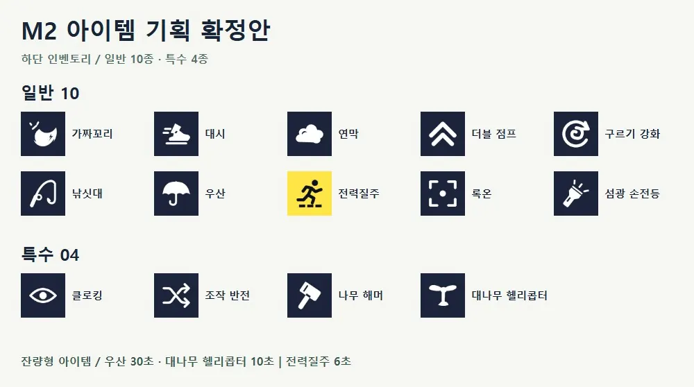
사용감이 재미있으니 더 자주 쓸 수 있게 했습니다.
상위 역할의 나무 해머와 등급을 나눴습니다.
은신의 다른 경험은 살리고 남발은 줄이려 했습니다.
“낚싯대 12m 록온 20m 이제 수치 확정하고 친구한테 아이템 넘길거야”
거리만 넘기지 않았습니다. 우클릭 유지 → 조준 → 놓아 발동하는 공통 입력과, 대상 없음, 사거리 이탈, 조준 취소 시 소모하지 않는 예외까지 확정했습니다.
당시 판단 원문과 구현 명세 발췌 읽기 →9월 말 Figma에 첫 화면을 그리면서, 요소마다 ‘왜 이만큼만 보여 주는지’를 메모로 붙였습니다.

미니맵
길을 잃지 않을 만큼만 알려 준다. 상대의 위치는 지도가 아니라 눈과 귀로 찾게 한다.Figma 메모, 01_HUD_InGame
지도는 길과 구역을 파악하는 도구이지 상대를 찾아 주는 도구가 아니다. 상대의 위치는 눈과 귀로 찾게 한다.최종 기획서 6.2 위치 정보 원칙
플레이어 카드
위치는 숨기지만 누가 남았는지는 알려 준다. 남은 사람이 줄수록 긴장감이 오른다.Figma 메모, 02_HUD_FullMap_M
좌우 플레이어 카드로 누가 남았는지 보여 준다. 위치는 숨기되 생존 현황은 알려 주어, 남은 사람이 줄수록 긴장이 오르게 한다.최종 기획서 13.4 전체 지도
아이템 칸
추격 중에도 손을 떼지 않고 숫자키만으로 바로 쓸 수 있게 한다. 아이템 스택이 가능해야 초반 조우 이전에 파밍 페이즈의 실질적인 의미가 생김.Figma 메모, 01_HUD_InGame
같은 아이템을 쌓을 수 있어야 첫 조우 이전의 수집 구간이 의미를 갖기 때문에 종류에 비해 칸을 넉넉히 둔다. 추격 중에도 손을 떼지 않고 숫자 키만으로 바로 쓸 수 있게 한다.최종 기획서 7.3 획득과 슬롯
힘겨루기
추격의 마지막 순간을 손으로 직접 겨루게 해서 잡는 쪽과 도망치는 쪽 모두 끝까지 긴장하게 만든다. 누가 이기고 있는지를 색의 넓이로 한눈에 보여 준다.Figma 메모, 06_HUD_TailTug_QTE
공격자와 방어자가 같은 게이지와 같은 키를 본다. 게이지는 양쪽의 꼬리 색으로 채워 누가 이기고 있는지를 색의 넓이로 보여 준다.최종 기획서 5.3 포획 단계
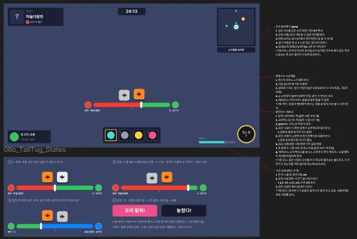
왼쪽은 10.01 Figma 페이지 캡처의 일부입니다(오른쪽에 있던 타사 게임 레퍼런스 화면은 잘라 냈습니다). 메모 원문은 2026.11.18에 저장한 Figma 레이어 구조(1-2-재민_UI.xml)에서 그대로 옮겼습니다.
스태미나 메모(“추격과 도망을 무한 달리기로 끝내지 못하게 한다”)도 최종 기획서 5.5절에 같은 문장으로 들어갔습니다. 기획서의 담당 칸에는 “메인 UI 기획, 전투 및 이벤트 요소 기획”으로 적혀 있습니다.
날짜를 누르면 그때 받은 의견과 바뀐 화면이 나옵니다.

출발한 의도
꼬리잡기 편을 본 사람이 많으니, 그 자막 문법을 보면 어떻게 플레이할지가 바로 떠오르게 하려 했습니다.
받은 의견, 10.06 팀 회의 메모
글꼴과 가독성은 좋다. 원색과 일부러 삐뚤어진 카툰 느낌이 놀이터 같다. 질감이 있으면 더 어울리겠다.
바꾼 것
질감 의견을 받아 종이, 핀, 클립으로 붙인 HUD를 만들었습니다.
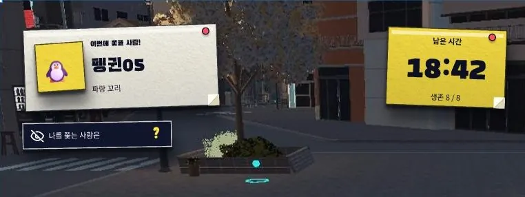
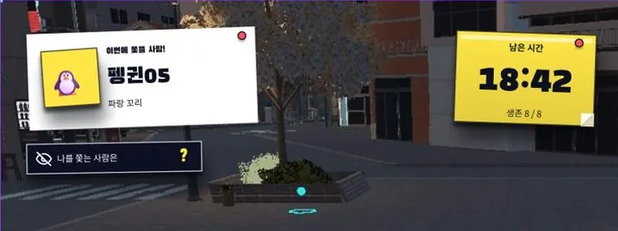
받은 의견, 10.07
“종이 텍스쳐 질감보단 한지 느낌이 나버려서”, “화면을 너무 가려버려서 UI 조금 더 작게”.
바꾼 것
섬유질을 빼고 핀, 클립, 얕은 그림자로만 종이를 표현했습니다. 10.08–15에는 시야를 가리던 시간 카드를 작게 줄이고, 제목, 본문 글꼴 원칙을 표로 정했습니다.

받은 의견, 10.22 빌드 검수
아이템이 배경에 묻히고, 노랑으로 선택해도 아이콘과 글자가 잘 구분되지 않는다. 알림 본문 글꼴만 다른 HUD와 다르다.
바꾼 것
미선택 칸은 흰 전경, 선택 칸은 남색 전경으로 바꾸고 스태미나를 칸 바로 위로 옮겼습니다. 알림 글꼴을 HUD와 맞춘 뒤 M1 배포본에 넣었습니다.

받은 의견, 11.06 M2 시연 설문
16명 중 9명이 UI 조작, 정보 접근을 고쳐 달라고 했습니다. 추격 중에 단서를 보려면 화면을 여러 단계 들어가야 했습니다.
바꾼 것, 11.09 제안
꼬리 탭에만 있던 원형 관계도를 왼쪽 위 HUD로 꺼냈습니다. 확인된 꼬리색은 이름표 배경으로, 모르면 ?로 두고, 한 명이 탈락하면 남은 이름표가 원을 따라 다시 자리를 잡습니다.
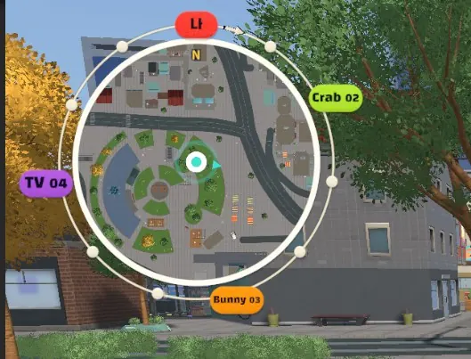
제안, 11.12
오른쪽 위 사각 미니맵을 왼쪽 위로 옮겨 원형으로 바꾸고, 관계도가 그 지도를 둘러싸게 하자.
바꾼 것
시안이 정보가 많아 지저분해 보여 단서 노트와 테두리를 빼고 지도를 키웠습니다. 생존 수는 10월에 확정했던 위 가운데 시간 카드 밑으로 되돌렸습니다.
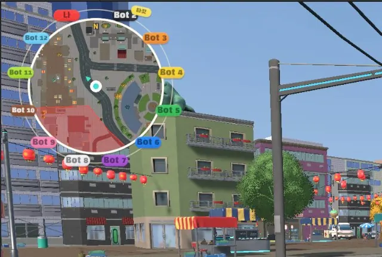
11.16에 도달한 형태
원 하나에서 내 위치, 주변 지도, 남은 사람, 내 타깃 표시를 함께 읽게 했습니다. 표지는 같은 날의 전체 화면입니다. 이후 폴리싱은 휴대폰의 추리 내용 연결과 QTE·관전 화면으로 이어졌습니다.
10월 의견은 제 업무 메모(10.06, 10.07)와 M1 진행 기록 PDF(10.24, 20쪽)에서 가져왔습니다. 팀원 이름은 빼고 의견만 남겼습니다. 11월 단계는 Codex 대화 원문(11.09, 11.12)과 커밋 67f4a7df2(11.11 원형 HUD 통합), 3aea27bfa(11.12 원형 미니맵) 기준입니다.
데모 빌드에서 건물 위로 올라갈 수 있는 것을 보고, 높은 곳에서 내려오는 길을 도망자의 선택지로 바꿨습니다.
“비 막는 용도의 우산이 아니잖아. 그래서 우산의 용도는 2층이나 높은 곳에서 떨어질 때 낙하산 느낌의 기능이야.”

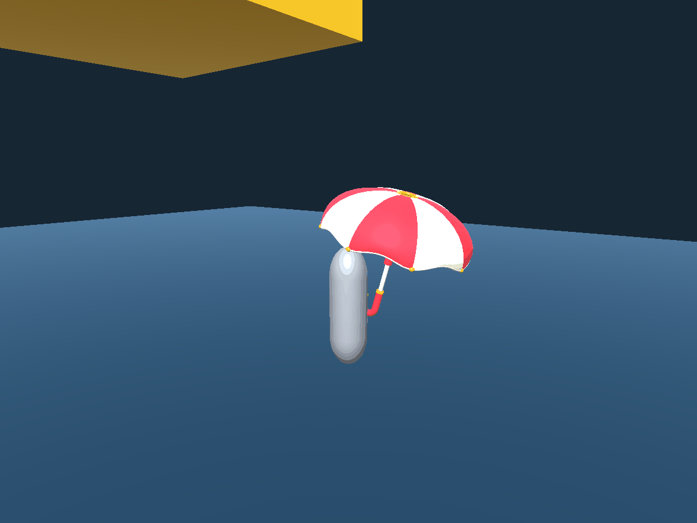
빨강 줄무늬 낙하산 같은 외형으로 Blender 모델과 접힘, 펼침 동작 제작
“2층을 갔을 때 상대의 추격을 저지할 수 있는 아이템”, 낙하산은 사람보다 느리니 하강 속도는 걷기와 비슷하게
“너무 바깥쪽으로 벌어진” 그립을 몸 앞쪽으로 고침
팀원 A(팀장)의 “사용감이 재밌어 자주 썼으면 좋겠다”는 의견을 받아 특수에서 일반 등급으로

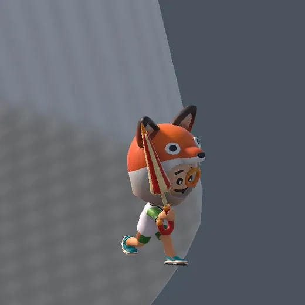
모델, 동작은 Codex로 Blender를 조작해 만들었고, 외형, 쓰임새, 동작 검수는 제가 했습니다. 11.06 M2 시연 설문에서는 2명이 아이템 활용(더블 점프, 우산)을 좋았던 점으로 꼽았습니다.
M2 시연을 나흘 앞둔 11.02, 아이템을 다시 짜고 보니 추격자 쪽 아이템이 낚싯대 하나뿐이었습니다.
“추격전에 활용할 만한, 기존에 우산처럼 획기적인 뭔가” 요청
AI 후보 중 ‘추격 부스터’: 눈앞의 상대를 계속 따라가면 가속
제안: 록온, 숄더뷰로 바꾸고, 고른 상대를 쫓을 때만 빨라지게
시제품(AI 구현): 직접 고른 상대, 6초, 최대 25% 가속, 벽이나 연막에 가리면 멈춤
“상대 입장에서 록온이 예상되면 골목 안으로 들어가면 되니까 게임이 되지”
아이템 구성과 함께 커밋 ecd8d06e7
둘 다 우클릭으로 화면에 보이는 상대를 고르고 놓아 씁니다. 은신, 연막, 벽 뒤의 상대는 고를 수 없고, 비밀 타깃의 신원은 알려 주지 않습니다.
18:30 록온 사거리를 낚싯대 최대 거리와 같게 → 18:55 15m → 19:10 록온 25m, 낚싯대 15m, 낚싯대도 록온과 같은 조준 방식으로 → 19:18 “낚싯대 12m 록온 20m” 확정. 팀원에게 넘길 기획서, 구현 명세를 만들고 작업을 커밋했습니다(d01f87e2f, M2_ITEM_SPEC_FINAL.md).
시제품과 수치 반영 코드는 AI(Codex)가 작성했고, 저는 검수 씬에서 직접 써 보며 수치를 정했습니다.
판정 로직은 팀원이 만들었고(11.16), 저는 화면과 피드백을 맡아 다음 날 하루 만에 main에 합쳤습니다.

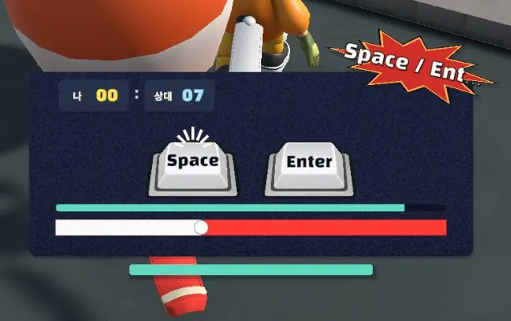
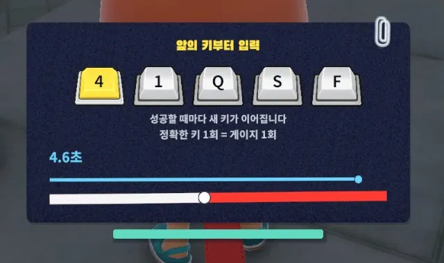
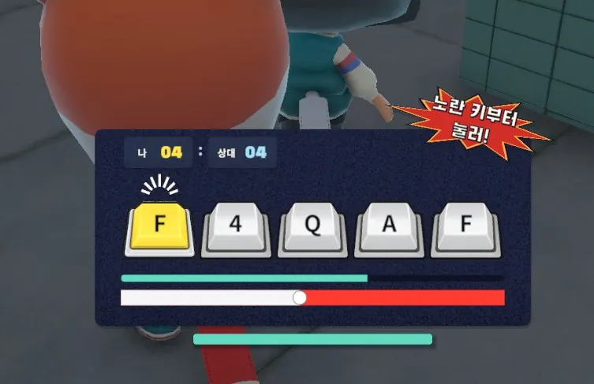
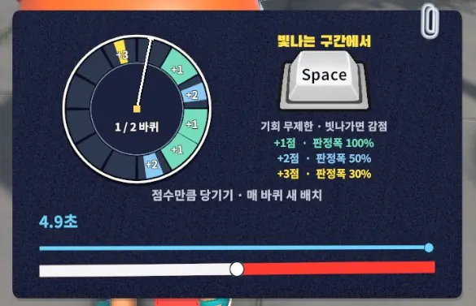
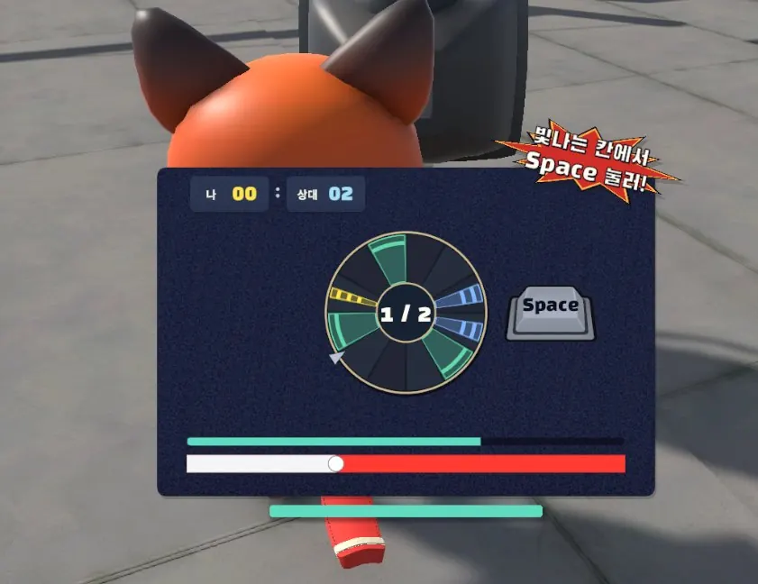
15:21에 제가 보낸 실제 화면입니다. 남은 초, 점수, 조작법을 모두 글자로 읽어야 했습니다.18:30에 남긴 작업 중 캡처입니다. 이후 태그 문구와 위치, 차등 점수, 원형 게이지 표시, 오입력 안내를 추가로 조정했습니다. 아래는 그 후 확정한 규칙입니다.
키캡 위 카툰 강조선과 눌림 색으로 다음 입력을 유도합니다. 성공한 입력이 점수와 줄다리기 게이지에 함께 반영되도록 연결했습니다.
현재 키만 노랗게 강조합니다. 틀리면 빨간 키캡·흔들림과 “다시! 노란 키부터!” 안내로 어느 입력부터 이어가야 하는지 알립니다.
득점할 수 있는 범위만 빛나게 하고, 색과 테두리로 등급을 나눕니다. 맞힌 조각은 떨어지고 1·2·3점 차등이 점수판과 게이지에 반영됩니다. 실패는 화면 흔들림 대신 은은한 색 반응으로 구분합니다.
공통 규칙: 남은 시간은 초록·노랑·빨강 막대로, 힘겨루기는 수평 게이지와 원형 표시로 읽게 했습니다. 원 주변의 짧은 반응으로 ‘지금 성공한 입력이 게이지를 움직였다’는 연결을 보강했습니다.

“다트가 이미 문법으로 사람들한테 친숙하게 깔려 있기에 더 텍스트가 필요 없잖아.”

설명 문구를 모두 빼고, 성공, 실패를 색과 흔들림으로 바로 알 수 있게
원판을 다트판 문법으로 다시 디자인, 점수 숫자 대신 색과 줄 수
맞힌 조각이 원판 밖으로 떨어짐, 남은 시간은 숫자 대신 스태미나처럼 초록→노랑→빨강 막대
클립을 떼고 런닝맨 자막 같은 사선 태그로 “무엇을 할지” 명령형 안내, 나 : 상대 전광판
태그 문구를 직접 정하고, 원판 1, 2, 3점 차등을 전광판 점수에 반영
18:56 커밋 71a3b6fab → PR #61로 main 병합
세 QTE의 판정 로직은 팀원이 11.16에 올린 커밋(cb1e63e8f)입니다. 화면 코드는 AI(Codex)가 작성했고, 문구, 레퍼런스, 색 규칙과 F10 연습창에서의 플레이 검수는 제가 했습니다. 15:21 수정 중 바꾸지 말았어야 할 스페이스 엔터까지 바뀌어 직전 버전으로 되돌린 일도 있었습니다.
같은 설문에서 9명은 정보에 닿는 조작을 고쳐 달라고 했습니다. 이를 원형 HUD, 폰 단축키와 추리 정보 연결을 다듬는 근거로 삼았습니다. 아래 수치는 M3 수정 전인 11.06 M2 설문이며, M3의 개선 효과를 측정한 수치는 아닙니다.
가장 많이 나온 성능 문제(12명)는 제가 맡은 UI, 아이템 범위 밖입니다.
2026.11.06 M2 시연 뒤 받은 설문(16명, 7문항)입니다. 서술형 응답을 주제로 나눴고, 같은 사람이 여러 문항에서 같은 주제를 말하면 한 번으로 셌습니다. 한 사람이 여러 주제에 들어갈 수 있습니다.